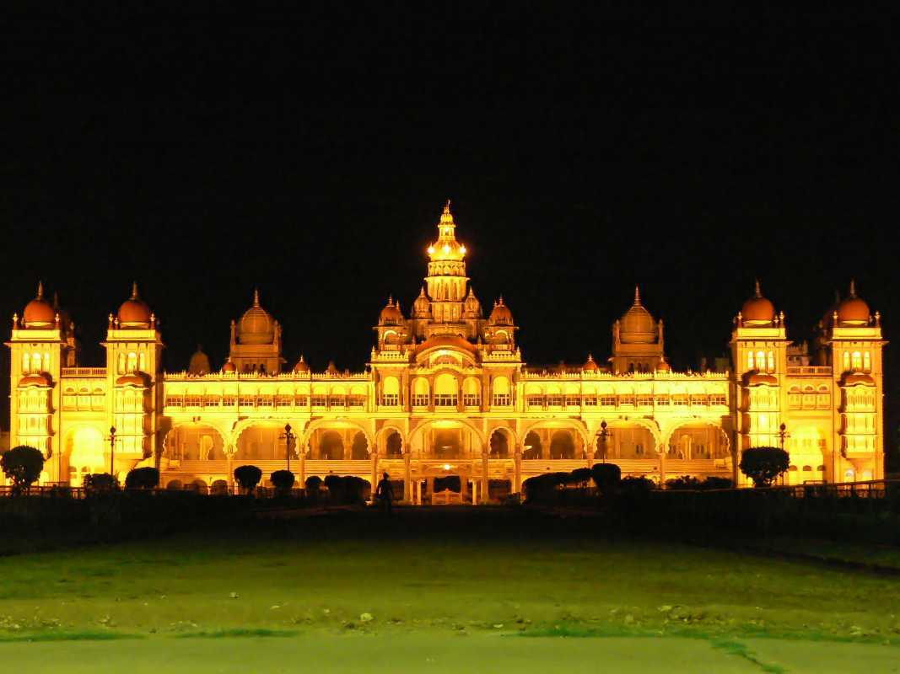
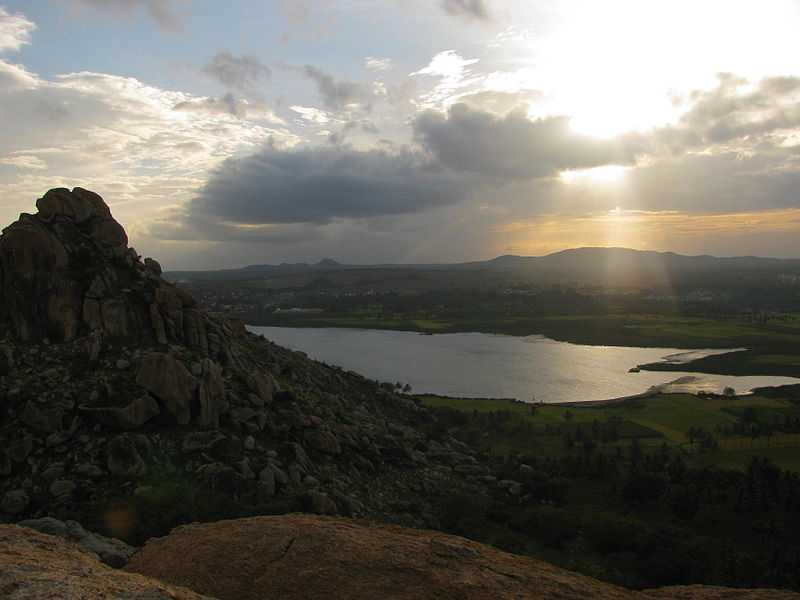
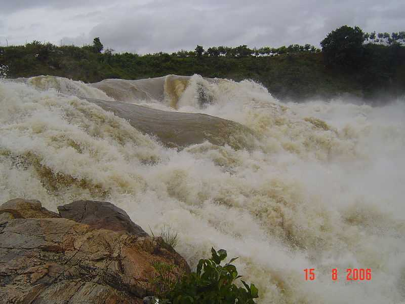
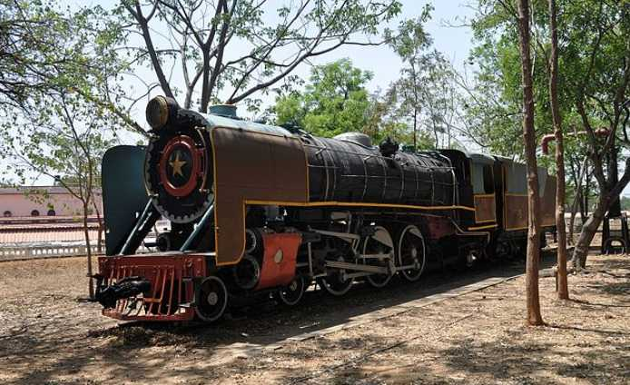
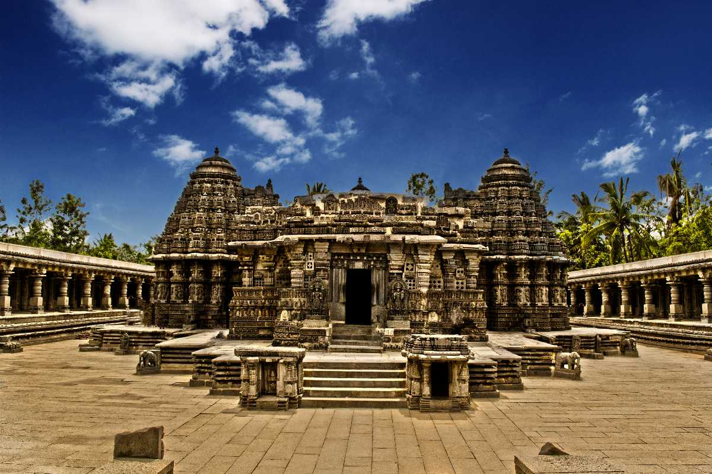
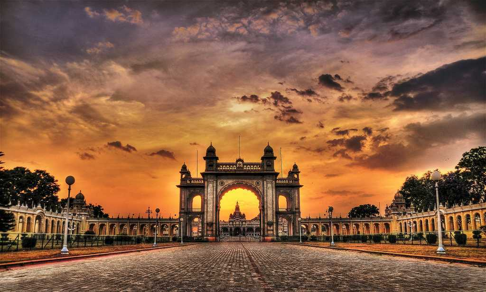
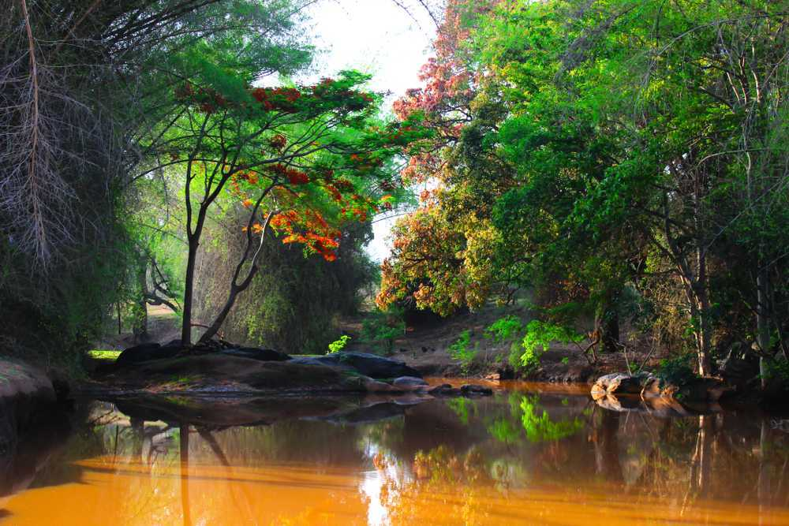
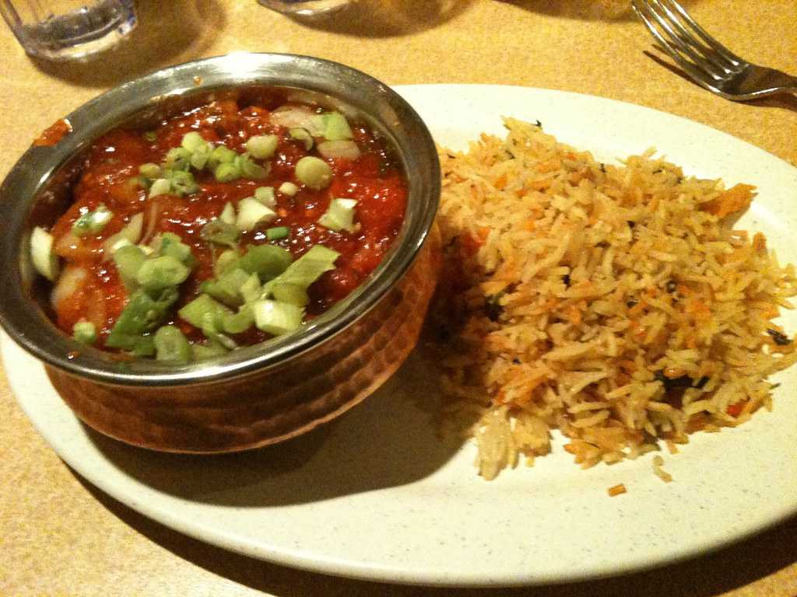

Mysore, located in the southern state of Karnataka, is known for its rich royal heritage, grand architecture, and vibrant cultural traditions. Once the capital of the Kingdom of Mysore, it flourished under the rule of the Wadiyar dynasty. The city is most famous for the majestic Mysore Palace, which blends Hindu, Islamic, and Gothic styles and draws millions of visitors annually. Mysore is also renowned for its Dussehra Festival, a 10-day celebration featuring processions, music, and dance, reflecting the city's deep-rooted cultural pride. Apart from its regal past, Mysore is celebrated for its sandalwood products, silk sarees, and as a center for Ashtanga yoga. The city’s peaceful environment, wide roads, and historic charm make it a popular destination for history lovers, spiritual seekers, and art enthusiasts alike.







Mysore is home to the second most visited palace in India—the Mysore Palace, attracting over 3 million tourists every year. During the grand Dasara (Dussehra) festival, the palace is illuminated with around 100,000 bulbs, transforming it into a glowing symbol of royal heritage. This 10-day celebration honors the victory of good over evil and features processions, cultural performances, and traditional music, drawing visitors from across the globe. The palace's blend of Indo-Saracenic architecture, vibrant frescoes, and rich history makes it a true icon of Karnataka’s cultural pride.
Grand Indo-Saracenic royal palace known for its opulent halls, stained glass, and rich royal history. Illuminated during Dasara with 100,000 lights.
Heart of Mysore city
October to March especially during the Dasara festival.
Scenic waterfall on the Kaveri River, known for its wide flow, natural beauty, and a temple dedicated to Lord Rama.
Around 55 km from Mysore, near KR Nagar
July to October – during and after monsoon for full water flow.
A peaceful lake and nature park ideal for bird watching, boating, and relaxation. Home to a butterfly park and aviary.
Near Mysore Zoo, Chamundi Hills road
October to February
Twin rocky hills great for trekking and adventure, with mythological significance linked to the Pandavas. Offers sunrise views and night treks.
Near Pandavapura, about 33 km from Mysore
October to March – cooler climate for trekking.
Famous for iddli-sandhar

North Indian, Chinese
Famous For South Indian dish.
India’s Tourism, MI Road Delhi
📞 +91 141 2822863
📧 info@indiatourism.gov.in
🕘 Mon–Sat, 9:00AM–6:00PM